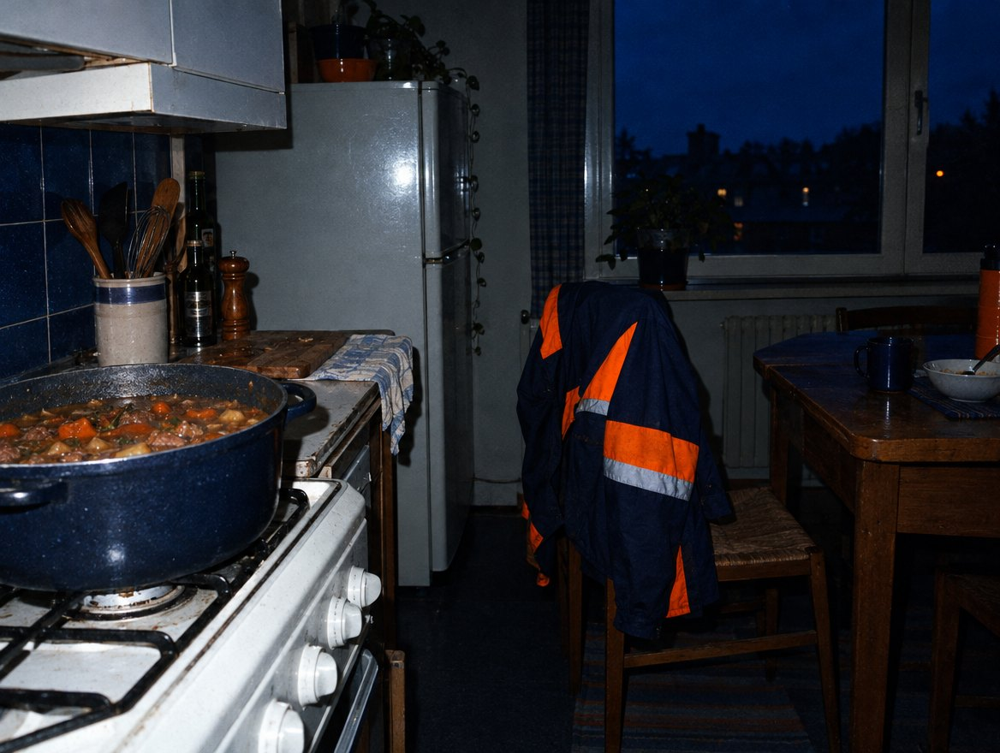
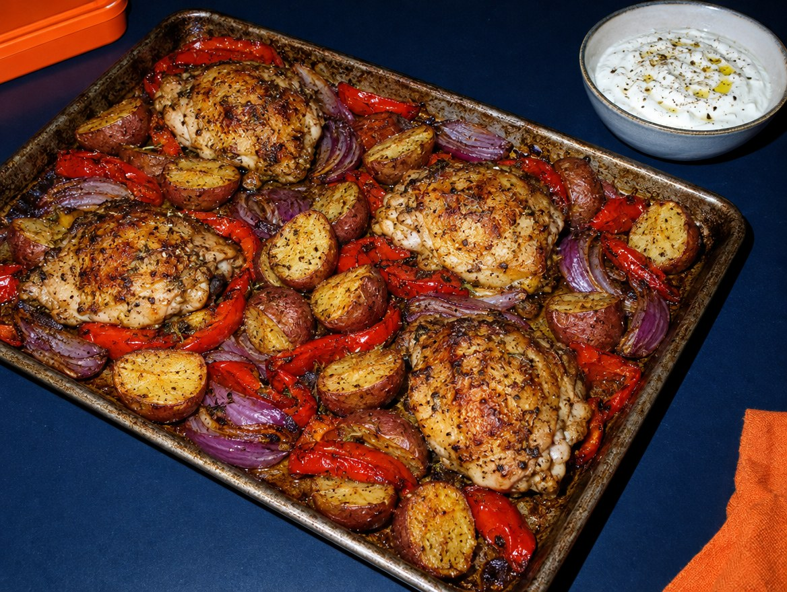
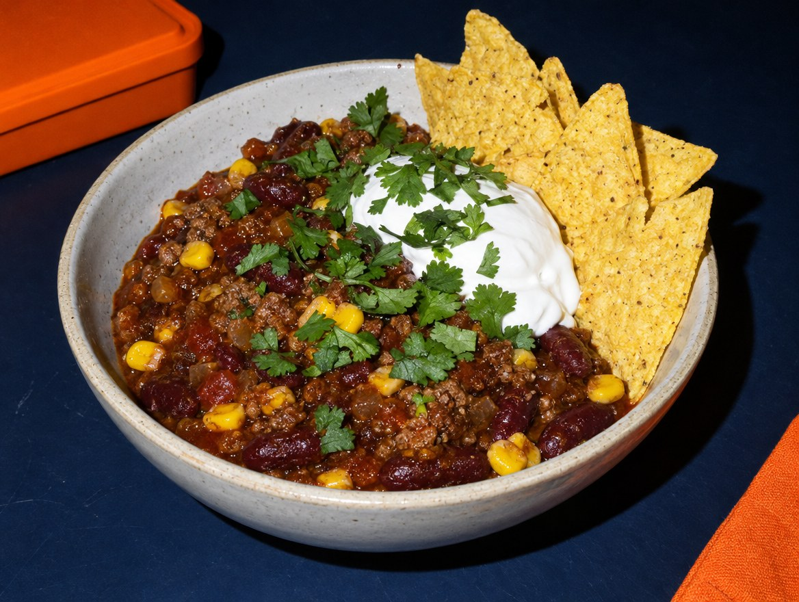
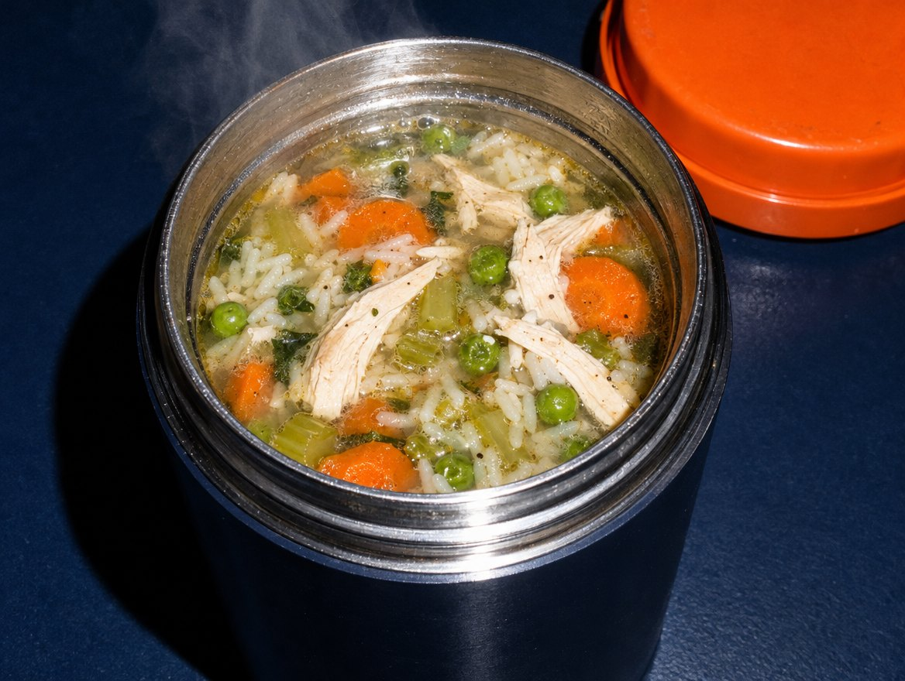
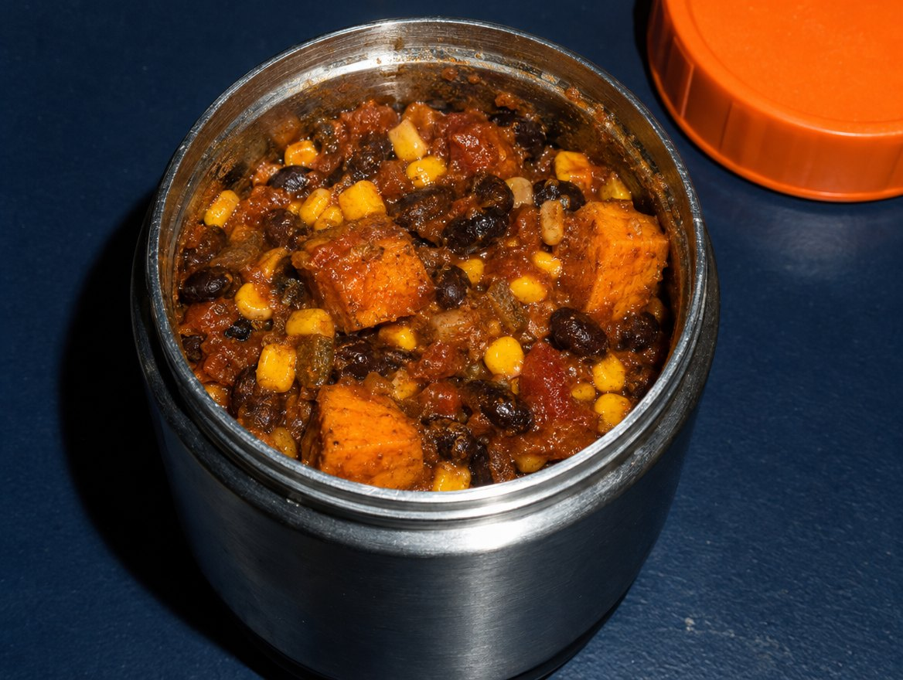
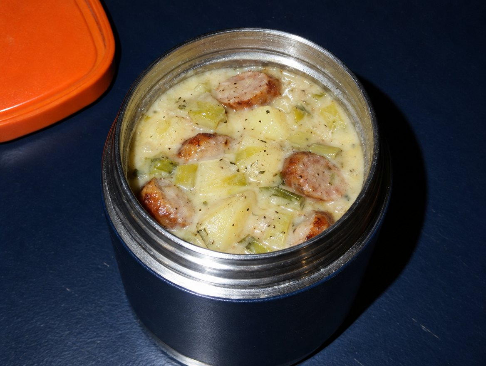
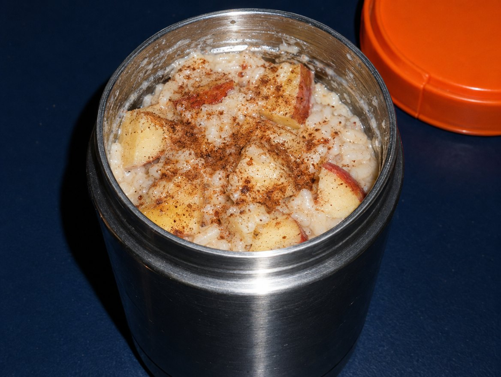
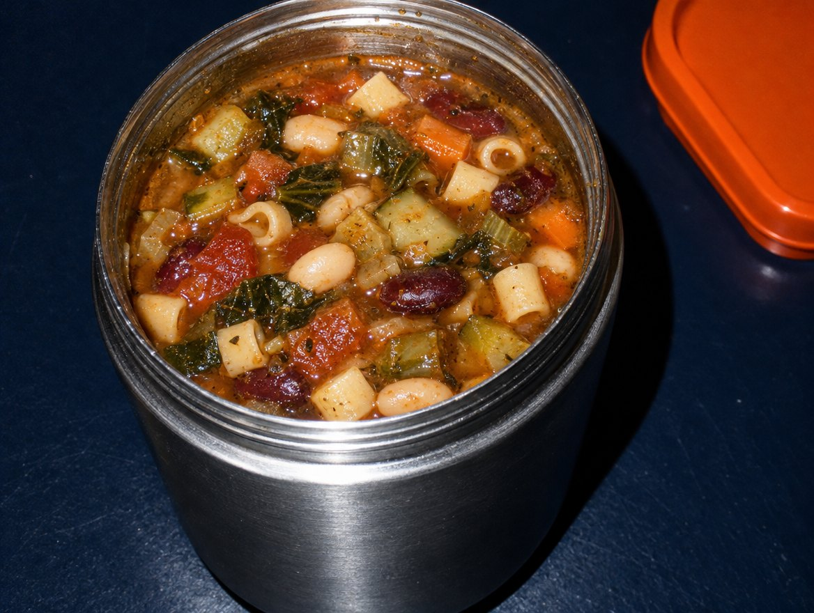

Dieses Buch ist kein Diätbuch. Für Schichtarbeit gelten dieselben Ernährungsempfehlungen wie für alle anderen – nur die Verteilung der Mahlzeiten über den Tag ist anders (DGE 2024).
Darum ist es nach etwas anderem sortiert als nach Vorspeise und Dessert: nach deiner Schicht, nach deiner Pause und nach dem, was im Pausenraum steht.
Alle Aussagen zu Lagerung, Aufwärmen und Koffein stützen sich auf öffentliche Stellen wie BfR, BZfE, DGE und EFSA. Die Quellen stehen hinten im Buch. Wo die Stellen unterschiedliche Zeiten nennen, nehmen wir die vorsichtigere.
Die Fotos der Gerichte sind mit KI erzeugte Darstellungen, keine Fotos nachgekochter Rezepte. Mengen und Zeiten sind Richtwerte. Bei Erkrankungen, Allergien oder in der Schwangerschaft gilt der Rat deiner Ärztin oder deines Arztes.
Essen nach Dienstplan3
DURCHSCHICHTSo funktioniert es
So funktioniert es
Vier Regeln. Vier Symbole.
1 · Nimm deinen Dienstplan
Such dir den Plan, der deiner nächsten Woche am nächsten kommt: Früh-Block, Spät-Block, Nacht-Block oder Wechsel. Die Pläne stehen vor den Rezepten.
2 · Schau auf die Symbole
Jedes Rezept zeigt, was es am Arbeitsplatz braucht: Mikrowelle, Kühlschrank, gar nichts (Kühltasche) oder Thermobehälter. Nimm nur, was zu deinem Pausenraum passt.
3 · Ein Kochblock statt jeden Tag
Gekochtes hält 2 Tage im Kühlschrank. Darum gibt es zwei kurze Kochblöcke pro Woche oder die Truhe – nie fünf Tage Vorrat im Kühlschrank.
4 · Datum UND Uhrzeit
Wer nachts arbeitet, verliert schnell das Zeitgefühl. Auf jede Box kommt, wann gekocht wurde – mit Uhrzeit. Etiketten zum Ausdrucken sind hinten im Buch.
Mikrowelle
Abgedeckt erhitzen, zwischendurch umrühren, bis es überall dampfend heiß ist (mind. 70 °C für 2 Minuten).
Nur Kühlschrank
Kalt gedacht und kalt gut. Box bis zur Pause im Kühlschrank lassen.
Ohne Kühlschrank
Kühltasche mit mindestens zwei Kühlakkus. Hält in der Regel durch eine Schicht – bei Hitze lieber Rezepte mit diesem Symbol, die ohne Kühlung sicher sind (z. B. N05, N06).
Thermobehälter
Behälter 5 Minuten mit kochendem Wasser vorwärmen, Essen sprudelnd kochend einfüllen, sofort verschließen. Es muss bis zum Essen mindestens 60 °C haben (BfR) – prüf das einmal mit einem Thermometer.
Essen nach Dienstplan4
DURCHSCHICHTRhythmus
Der Rhythmus
Wann essen – je nach Schicht
Ein Raster, keine Pflicht. Es folgt den Empfehlungen von DGE und NIOSH: die warme Hauptmahlzeit vor der Schicht, kleine Mahlzeiten in der zweiten Nachthälfte.
Die warme, ausgewogene Mahlzeit gehört vor oder an den Anfang der Nacht. In der zweiten Nachthälfte nur bei Hunger etwas Kleines. Nicht hungrig, aber auch nicht vollgegessen ins Bett (NIOSH, DGE).
Trinken nicht vergessen
Rund 1,5 Liter am Tag, am besten Wasser oder ungesüßter Tee (DGE). Nachts wird erfahrungsgemäß oft zu wenig getrunken – stell dir eine Flasche sichtbar hin.
Koffein mit Plan
Bis 400 mg Koffein am Tag und 200 mg auf einmal gelten für gesunde Erwachsene als unbedenklich (EFSA/BfR) – Schwangere höchstens 200 mg am Tag. Faustregel: Koffein eher in der ersten Schichthälfte, etwa 6 Stunden vor dem Schlafen nicht mehr.
Alkohol ist keine Schlafhilfe
Er stört vor allem die zweite Schlafhälfte. Für den Tagschlaf nach der Nacht eine schlechte Idee.
Koffein-Uhr: Wie viel steckt drin?
Getränk
Koffein
Filterkaffee, 1 Becher (200 ml)
ca. 90 mg
Espresso, 1 Tasse (60 ml)
ca. 80 mg
Energydrink, 250 ml
ca. 80 mg
Schwarztee, 1 Tasse (220 ml)
ca. 50 mg
Cola, 330 ml
ca. 35 mg
Werte gerundet nach EFSA/BfR-Verbraucherinformation; Gehalt schwankt je nach Zubereitung und Produkt.
Essen nach Dienstplan6
DURCHSCHICHTLagerkarte
Lagerkarte · zum Ausdrucken
Wie lange hält das wirklich?
Gegartes
höchstens 2 Tage im Kühlschrank, sonst direkt nach dem Abkühlen einfrieren
Reis
innerhalb von 1 Stunde abkühlen, innerhalb von 24 Stunden essen, nur einmal aufwärmen
Kühlschrank
höchstens 7 °C, besser 5 °C – einmal mit einem Thermometer prüfen
Abkühlen
flach portionieren und innerhalb von 1–2 Stunden in den Kühlschrank
Aufwärmen
überall mindestens 70 °C für 2 Minuten, umrühren; nur die Portion, die du isst
Thermobehälter
vorwärmen, kochend einfüllen, bis zum Essen mindestens 60 °C
Auftauen
im Kühlschrank; Aufgetautes innerhalb von 24 Stunden essen
Riechtest
ist kein Sicherheitstest – Keime und Giftstoffe riecht man nicht
Gemeinschaftskühlschrank
Box nicht länger als deine Schicht drinlassen; beschriften mit Name, Datum und Uhrzeit
Darum
Warum Aufwärmen nichts rettet: Manche Bakteriengifte (z. B. von Bacillus cereus in Reis) halten sogar langes Kochen aus (BfR). Darum zählt das Abkühlen, nicht das Aufwärmen.
Essen nach Dienstplan7
DURCHSCHICHTDienstplan-Plan
Plan · 3 Frühdienste
Früh-Block
Kochblock
Kochblock am Vortag (ca. 60 Min.): V03 Chili (5 Portionen), K01 Couscous-Salat (3 Gläser). Jeden Abend 5 Minuten: N02 Overnight Oats für den nächsten Morgen.
Tag
Schicht
Vor der Schicht
Pause
Klein / danach
Vortag
frei
V03 Chili (warm)
—
K01 vorbereiten, 3 × V03 einfrieren, N02 ansetzen
Tag 1
Früh
N02 Overnight Oats
K01 Couscous-Salat
V03 Chili (Portion 2), N02 ansetzen
Tag 2
Früh
N02 Overnight Oats
K01 Couscous-Salat
M04 Gnocchi (20 Min., 2 Boxen), N02 ansetzen
Tag 3
Früh
N02 Overnight Oats
M04 Gnocchi (Box 2)
V03 aus der Truhe
Overnight Oats halten 24 Stunden – darum jeden Abend frisch ansetzen. Das dauert fünf Minuten.
abends normal essen: A06 aus der Truhe, früh ins Bett
Erster freier Tag
frei
Frühstück zur normalen Zeit
Mittag zur normalen Zeit
Kochblock für die nächste Woche
Nach der letzten Nacht kann ein kürzerer Tagschlaf helfen, wieder in den Nachtschlaf zu finden (DGUV-Information 206-027). Feste Mahlzeiten an den freien Tagen helfen dem Rhythmus (DGE).
Auf der Arbeit gibt es eine Übergabe. Zu Hause nicht – dabei lebt dort jemand in einem anderen Rhythmus. Ein Blatt pro Woche reicht.
Meine Schichten diese Woche: ______________________
Ich esse vor der Schicht um: ______ Uhr
In der Truhe ist: ______________________
Bitte nicht essen (für meine Schicht): ______________________
Ich schlafe von ______ bis ______ Uhr – bitte leise.
Gemeinsames Essen geht am: ______________________
Essen nach Dienstplan14
DURCHSCHICHTKochkette
Gemeinsam statt allein
Die Kollegen- Kochkette
Die Idee
Vier Kolleg:innen kochen je ein Gericht vierfach. In der nächsten Schicht wird getauscht – jede:r hat vier verschiedene Boxen und nur einmal gekocht.
Was sich eignet
Gerichte mit M- oder K-Symbol, die 2 Tage halten: V01, V03, V05, M02, M06, K01, K04.
Die Regeln
Gekocht wird am Tag vor dem Tausch. Gekühlt transportieren (Kühltasche). Auf jede Box Name, Gericht, Datum und Uhrzeit sowie die Allergene aus dem Rezept.
Fairness
Jede:r zahlt die eigenen Zutaten. Wer etwas nicht verträgt, sagt es vorher – die Allergene stehen bei jedem Rezept.
Essen nach Dienstplan15

Kapitel 01
Vor der Schicht
Die warme Hauptmahlzeit – zu Hause, bevor es losgeht. Vor der Nacht ist das die wichtigste Mahlzeit.
Zwiebel, Möhren und Kartoffeln in kleine Würfel schneiden.
Öl erhitzen, Zwiebel 3 Minuten andünsten, Paprikapulver kurz mitrösten.
Gemüse, abgespülte Linsen, Tomaten und Brühe zugeben, aufkochen und 30 Minuten leise köcheln, bis Linsen und Kartoffeln weich sind.
Mit Essig, Salz und Pfeffer abschmecken, Petersilie hacken und darüberstreuen.
Warum das passt
Ein Topf, vier Mahlzeiten: zwei Portionen für heute und morgen, zwei für die Truhe. Linsen und Kartoffeln machen lange satt und halten auch eine 12-Stunden-Nacht durch.
Lagern & mitnehmen
Abgekühlt in Boxen: 2 Tage im Kühlschrank oder 3 Monate eingefroren. Für den Thermobehälter morgens kochend heiß einfüllen.
Essen nach Dienstplan17
DURCHSCHICHTVor der Schicht
V02SpätNachtKochtag

Ofen-Hähnchen mit Kartoffeln & Paprika
45 Min. · aktiv 10 Min. · 4 Portionen · mit Fleisch
MikrowelleKühlschrank
Zutaten
600 gHähnchenschenkel ohne Knochen
800 gkleine Kartoffeln
2rote Paprika
1rote Zwiebel
3 ELOlivenöl
2 TLedelsüßes Paprikapulver
1 TLgetrockneter Oregano
150 gNaturjoghurt
Allergene: Milch (Joghurt).
So geht's
Ofen auf 220 °C (Umluft 200 °C) vorheizen. Kartoffeln halbieren, Paprika und Zwiebel in Spalten schneiden.
Alles mit Öl, Gewürzen und Salz auf einem Blech mischen, 15 Minuten backen.
Hähnchen dazulegen und weitere 25 Minuten backen, bis es innen nicht mehr rosa ist und der Saft klar austritt.
Mit Joghurt servieren. Den Rest sofort abkühlen lassen und portionieren.
Warum das passt
Ein Blech, ein Abwasch. Schmeckt warm vor der Schicht und am nächsten Tag kalt aus der Box – auch ohne Mikrowelle.
Lagern & mitnehmen
Innerhalb von 2 Stunden in den Kühlschrank, dort 2 Tage. Joghurt getrennt mitnehmen.
Essen nach Dienstplan18
DURCHSCHICHTVor der Schicht
V03SpätNachtKochtag

Chili mit Bohnen & Rinderhack
45 Min. · aktiv 15 Min. · 5 Portionen · mit Fleisch
MikrowelleThermobehälter
Zutaten
400 gRinderhackfleisch
1 ELRapsöl
1Zwiebel
2 ZehenKnoblauch
1rote Paprika
2 Dosen (à 400 g)Kidneybohnen
1 Dose (340 g)Mais
2 Dosen (à 400 g)stückige Tomaten
2 TLKreuzkümmel
1 TLChilipulver (mild)
Allergene: Keine der 14 Hauptallergene.
So geht's
Zwiebel, Knoblauch und Paprika würfeln.
Hack in Öl krümelig braten, bis es durchgegart ist. Zwiebel und Knoblauch 3 Minuten mitbraten, Gewürze 1 Minute mitrösten.
Paprika, Tomaten, abgespülte Bohnen und Mais zugeben, 25 Minuten köcheln.
Mit Salz abschmecken. Dazu Reis, Brot oder Tortillas.
Warum das passt
Das klassische Schichtgericht: wird am zweiten Tag besser, friert gut ein und füllt auch nach körperlicher Arbeit.
Lagern & mitnehmen
2 Tage im Kühlschrank, 3 Monate eingefroren. Reis getrennt lagern und innerhalb von 24 Stunden essen.
Kürbis entkernen und mit Schale würfeln, Zwiebel hacken.
Zwiebel in Öl 3 Minuten dünsten, Curry 1 Minute mitrösten.
Kürbis, Linsen und Brühe zugeben, 20 Minuten köcheln.
Kokosmilch einrühren, fein pürieren und abschmecken.
Warum das passt
Dicke Suppen halten im Thermobehälter die Wärme besonders gut. Ohne Mikrowelle die einfachste warme Mahlzeit.
Lagern & mitnehmen
Für den Thermobehälter: Behälter 5 Minuten mit kochendem Wasser vorwärmen, Suppe sprudelnd kochend einfüllen. Rest 2 Tage im Kühlschrank oder 3 Monate eingefroren.
Essen nach Dienstplan44
DURCHSCHICHTThermobehälter
T02NachtKochtag

Hühner-Reissuppe mit Gemüse
50 Min. · aktiv 15 Min. · 4 Portionen · mit Fleisch
ThermobehälterMikrowelle
Zutaten
2Hähnchenkeulen
1 BundSuppengrün
1,5 lWasser
100 gLangkornreis
150 gTK-Erbsen
½ BundPetersilie
Allergene: Sellerie.
So geht's
Keulen mit Wasser und etwas Salz aufkochen, 35 Minuten leise köcheln.
Keulen herausnehmen, Fleisch vom Knochen lösen und zerzupfen.
Suppengrün klein schneiden, mit dem Reis in der Brühe 15 Minuten garen, Erbsen zugeben.
Fleisch zurück in den Topf, abschmecken, Petersilie dazu.
Warum das passt
Leicht, warm und gut verträglich – für die Nacht, wenn ein schweres Essen nicht passt.
Lagern & mitnehmen
Thermobehälter vorwärmen, kochend einfüllen. Wegen des Reises: Rest innerhalb von 24 Stunden essen.
Essen nach Dienstplan45
DURCHSCHICHTThermobehälter
T03SpätNachtKochtag

Chili sin Carne
40 Min. · aktiv 15 Min. · 5 Portionen · vegan
ThermobehälterMikrowelle
Zutaten
1 ELOlivenöl
1Zwiebel
2Paprika
1Süßkartoffel
2 Dosen (à 400 g)schwarze Bohnen
1 Dose (340 g)Mais
2 Dosen (à 400 g)stückige Tomaten
2 TLKreuzkümmel
1 PriseZimt
Allergene: Keine der 14 Hauptallergene.
So geht's
Zwiebel, Paprika und Süßkartoffel würfeln.
Zwiebel in Öl 3 Minuten dünsten, Gewürze 1 Minute mitrösten.
Gemüse und Tomaten zugeben, 20 Minuten köcheln.
Bohnen und Mais zugeben, 10 Minuten weiterköcheln, salzen.
Warum das passt
Dicht, sämig, ohne Fleisch – bleibt im Thermobehälter heiß und schmeckt auch nach Stunden noch.
Lagern & mitnehmen
Thermobehälter vorwärmen, kochend einfüllen. Rest 2 Tage im Kühlschrank, 3 Monate eingefroren.
Essen nach Dienstplan46
DURCHSCHICHTThermobehälter
T04NachtKochtag

Kartoffel-Lauch-Suppe mit Würstchen
35 Min. · aktiv 15 Min. · 4 Portionen · mit Fleisch
ThermobehälterMikrowelle
Zutaten
800 gmehligkochende Kartoffeln
2 StangenLauch
1 ELButter
1 lGemüsebrühe
100 mlMilch
4Wiener Würstchen
1 PriseMuskat
Allergene: Milch; Brühe und Würstchen je nach Produkt: Sellerie, Senf.
So geht's
Kartoffeln würfeln, Lauch in Ringe schneiden.
Lauch in Butter 4 Minuten dünsten, Kartoffeln und Brühe zugeben, 20 Minuten kochen.
Die Hälfte pürieren, Milch einrühren, mit Salz, Pfeffer und Muskat abschmecken.
Würstchen in Scheiben schneiden und 5 Minuten in der Suppe heiß werden lassen.
Warum das passt
Deftig und wärmend für kalte Nächte auf dem Hof, an der Rampe oder im Wachdienst.
Lagern & mitnehmen
Thermobehälter vorwärmen, kochend einfüllen. Rest 2 Tage im Kühlschrank.
Essen nach Dienstplan47
DURCHSCHICHTThermobehälter
T05NachtDanach

Milchreis mit Apfel & Zimt
35 Min. · aktiv 10 Min. · 3 Portionen · vegetarisch
ThermobehälterKühlschrank
Zutaten
150 gMilchreis
750 mlMilch
1 PriseSalz
2 ELZucker
1Apfel
1 TLZimt
Allergene: Milch.
So geht's
Milch mit Salz und Zucker aufkochen, Milchreis einrühren.
Bei kleinster Hitze 30 Minuten quellen lassen, dabei öfter umrühren.
Apfel klein würfeln, mit Zimt in den letzten 5 Minuten unterrühren.
Warum das passt
Warm, süß und sättigend für die zweite Nachthälfte – eine kleine Portion statt des Automatenriegels.
Lagern & mitnehmen
Heiß in den vorgewärmten Thermobehälter oder abgekühlt 2 Tage im Kühlschrank (kalt essbar).
Essen nach Dienstplan48
DURCHSCHICHTThermobehälter
T06SpätNachtKochtag

Gemüse-Nudel-Eintopf (Minestrone)
35 Min. · aktiv 15 Min. · 5 Portionen · vegetarisch
DGE (2024): Ernährung bei Schichtarbeit, DGEwissen 3/2024
Gleicher Bedarf, andere Verteilung; fester Rhythmus auch an freien Tagen.
BfR: Vorkochen für mehrere Tage (FAQ)
Gegartes 2–3 Tage gekühlt, Aufwärmen auf 70 °C für 2 Minuten.
BZfE: Lagerung von Speisen
Gegarte Speisen bis zu 2 Tage im Kühlschrank.
BfR: Heißhalten von Speisen (Stellungnahme 2020/2024)
Erhitzte Speisen bis zum Verzehr mindestens 60 °C.
BfR: Bacillus cereus (2019)
Hitzestabiles Toxin Cereulid; Reis schnell abkühlen.
FSA/NHS: Reis
Innerhalb von 1 Stunde abkühlen, innerhalb von 24 Stunden essen.
EFSA (2015) / BfR: Koffein
Bis 400 mg/Tag, 200 mg Einzeldosis für gesunde Erwachsene; Schwangere 200 mg/Tag.
NIOSH: Training for Nurses on Shift Work, Modul 9
Hauptmahlzeit vor der Nacht, kleines Essen vor dem Tagschlaf.
DGUV Information 206-027
Tagschlaf nach der letzten Nacht ggf. kürzen.
ArbZG § 4
Pausen: 30 Minuten bei mehr als 6 Stunden, 45 Minuten bei mehr als 9 Stunden.
Stand der Informationen: Oktober 2026. Empfehlungen können sich ändern; maßgeblich sind die aktuellen Veröffentlichungen der genannten Stellen. Allgemeine Information, keine medizinische Beratung.